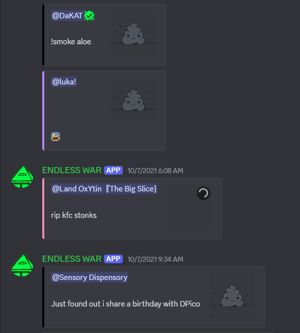
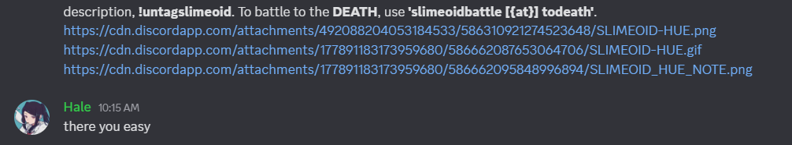

Discord is such a hostile platform for art. It's a curse that RFCK is tied to it, really. At the beginning of the year they changed all cdn links to be temporary, and now 7 years of history is withering. Has withered, really — most links are already dead.

Slime Twitter losing some sovl
I'm starting up a mass-archival effort. I was such a fool, not doing this sooner! A great fool! I remember the slimeoid hue thing being an issue in the past. Why didn't I back this all up then? This has already happened in history before, notably with Gabe's comic. It's just. FUCK. Fuck.

The first warning. Image from now, but it began a few months ago.